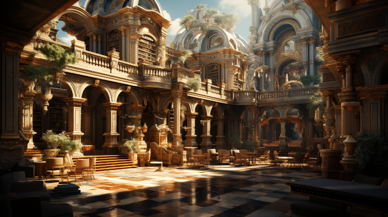

University of Naethanor

Figure 1: The Quadrangle in the University of Naethanor
Nestled amidst lush emerald hills a few miles south of Ponte Cidade, the University of Naethanor stands as a beacon of knowledge and innovation. A sprawling campus featuring a seamless blend of historic and modern architecture, the institution is a testament to the ever-evolving pursuit of wisdom. Established over three centuries ago, the University is named in honor of Naethanor, a luminary figure whose influence on academics and culture is unparalleled.
The university houses the world-renowned Laurië Manuscript Archive, boasting an impressive collection of ancient texts and cutting-edge research materials. With a faculty that’s a blend of experienced veterans and pioneering young scholars, Naethanor offers a rigorous curriculum across a wide range of disciplines— from natural sciences and arcane arts to politics and philosophy.
Easily accessible via the Ceolass Strait, the university attracts students and academics from across Naurrnen. Its position away from the bustling city life offers an environment conducive for focused learning, while its proximity to Ponte Cidade ensures students are never far from cultural engagements and social outings.
Most notable is its Hall of Dialogue, an amphitheater styled in the tradition of ancient Elven architecture, serving as a common ground for scholarly debates and intellectual discourse. The University of Naethanor is not just an institution; it’s a vibrant community that molds the leaders, thinkers, and visionaries of tomorrow.